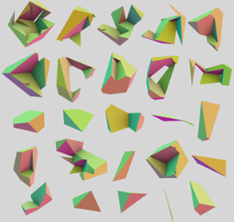
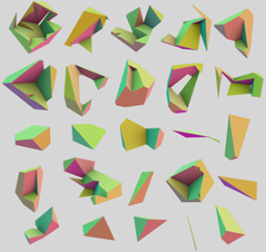
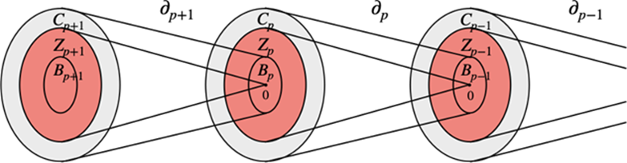
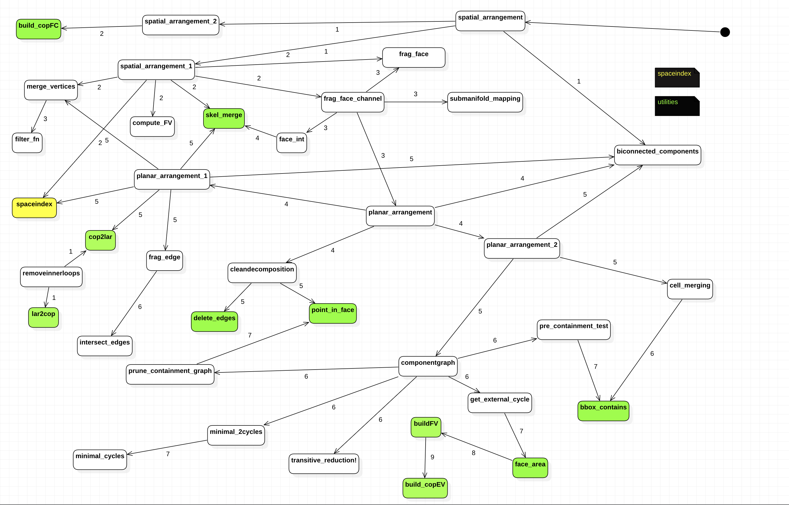

title: | Report
CPD22 - Assignment #3
Delivery #1 –-
::: titlepage
[Magistrale in ingnegneria informatica]{.smallcaps}
::: center Calcolo parallelo e distribuito
LAR - Topological gift wrapping in 3D
Gruppo 8a
:::
::: tabularx 360ptl c c c
cName & Student ID
Ennio Malvati & 484998
Gianluca Di Lorenzo & 583630
Raffaele Scarano & 576304
::: :::
Introduzione
Il dominio dello schema di rappresentazione è attualmente limitato all'Algebra Booleana dei poliedri PL, che possono essere disconnessi e/o non-varianti. Gli elementi di questa algebra sono in corrispondenza uno-ad-uno, biunivoca, con le 3-chains complexes, ossia i complessi di catene di 3 dimensioni, usando le basi p-chains (p-celle, con p = 0,...,3) con cui sono connesse.
Data una qualsiasi raccolta di modelli di questo dominio, utilizzando l'approccio di Paoluzzi, costruiamo la rappresentazione LAR della loro disposizione in $E^3$, includendo il complesso di tre-catene con $\delta_p$ operatori rappresentati da matrici sparse (si ricordi che le matrici sparse sono matrici con molti elementi non significativi). 3-cells e le 3-chains elementari in LAR sono in corrispondenza uno-ad-uno con gli atomi dell'Algebra Booleana dei CSG . Per cui ogni solido 3D in questa algebra booleana può essere rappresentato sia da una stringa di bit che ne indica la struttura in termini di atomi, cioè da una 3-chains coerentemente orientata, sia dal suo 2-ciclo orientato al limite.
Stato dell'arte
Complessi di catene e complessi di celle
Un complesso è un insieme S con grado $S = {S _i }$ . Verranno utilizzati due tipi di complessi diversi ma intrecciati, in particolare complessi cellulari e complessi di catene. Le loro definizioni ed alcuni concetti correlati vengono forniti in questa sezione. Le $lettere$ $greche$ saranno usate per le $celle$ di uno spazio di partizione e le $lettere$ $romane$ per le $catene$ di celle, codificate come numeri interi con e senza segno o array sparsi di numeri interi con e senza segno.
Complessi di celle
\[Definizione\]
$d$ - $Manifold$ : un $manifold$ è uno spazio topologico che localmente è simile ad un altro spazio topologico ben conosciuto, ad esempio lo spazio euclideo n-dimensionale, ma che globalmente può avere proprietà geometriche differenti, ad esempio può essere $"curvo"$ contrariamente allo spazio euclideo. Ogni punto di un $manifold$ con $d$ dimensioni ha un vicino che è omeomorfo, cioè simile ma non obbligatoriamente uguale del tutto, ad $E^3$, lo spazio euclidiano di d-dimensioni.
$Definizione$ $Cella$ : una $p$-$cella$ è un $p$ - $manifold$ con confini $0\leq$ $p\leq$d i quali sono lineari a tratti, connessi, possibilmente non convessi e non contrattabili, non si storcono. Questa definizione si riferisce ai complessi cellulari di questo lavoro e nella nostra rappresentazione ci possono essere celle con buchi interni.
Avremo a che fare con celle Piecewise-Linear (PL) (lineari a tratti) rispettivamente di dimensione 0, 1, 2 e 3. Va notato che le 2-celle e 3-celle possono contenere dei fori (buchi), pur rimanendo collegati. In altre parole, le celle sono poliedri, cioè segmenti, poligoni e poliedri incorporati in uno spazio bi o tridimensionale.
$Definizione$ $complesso$ $cellulare:$ un p-complesso cellulare è un insieme finito di celle che hanno al massimo dimensione $p$, insieme alle loro facce $r$-$dimensionali$ dei bordi con $0\leq$ $r\leq$p. Una faccia è un elemento del confine lineare a tratti della cella, il quale soddisfa le condizioni di compatibilità di confine, che seguono:
- Due $p-celle$ sono $boundary$-$compatible$ quando i loro punti di intersezione contengono le stesse r-facce.
- Un complesso cellulare di dimensione p è definito $regolare$ quando ogni r-cella, con $0\leq$ $r\leq$p , è una faccia di una p-cella
$Definizione$ $Skeleton:$ Un $s-skeleton$ di un p-complesso $\Lambda_p$, con $s\leq$p, è l'insieme $\Lambda_s$ di tutte le r-celle di $\Lambda_p$ . Ogni scheletro di un complesso regolare è un sottocomplesso regolare.
$Definizione$ $Rappresentazione$ $Geometrica$: La rappresentazione algebrica lineare (LAR) ha introdotto l'uso di array binari sparsi per calcolare e rappresentare una topologia algebrica di complessi cellulari, ovvero spazi lineari di catene e operatori di (co)confine lineari. (Quindi è una mappatura della disposizione geometrica con matrici/array sparsi binari).
$Definizione$ $Spazio$ $di$ $supporto$: Lo spazio di supporto $|\Lambda|$ di un complesso cellulare è l'insieme dei punti dell'unione delle proprie celle.
Una $\textbf{p-catena}$ può essere vista, forzando il linguaggio, come una **c*ollezione di p-celle.***
Catene e Disposizioni
La parola $arrangment$ è usata nella geometria combinatoria e computazionale, ma anche nella topologia, come sinonimo di partizione spaziale.
$Definizione$ $Space$ $Arrangement:$ Data una collezione finita $S$ di oggetti geometrici in $E^d$ la disposizione $A(S)$ è la decomposizione di $E^d$ in celle connesse di dimensione $0, 1,…,d$ indotte da $S$. Siamo interessati alla partizione dello spazio euclideo indotta da una collezione di complessi cellulari PL.
Data una collezione S di oggetti geometrici, un nuovo metodo per calcolare la topologia della loro disposizione spaziale consiste nel valutare A(S) come complesso di catene C.
Esempio di $3D$ $arrangment$
::: center   :::
 :::
Nelle figure si mostra la disposizione $A(S)$ generata dalla collezione $S$ fatta dalle $trenta$ facce $2D$ di $5$ cubi che si intersecano randomicamente. Ogni cella $3D$ in $A(S)$ è generata da una colonna della matrice sparsa della mappa di confine confine $\delta_3$ con valori in (0,1,-1). Nella figura a sinistra si nota la collezione $S$ di 5 cubi randomici in $E^3$, mentre quella di destra mostra le 3-celle generate in $E^3$ dalla disposizione A(S), (non in scala, e opportunamente ruotate per mostrare meglio la loro forma complessa). Si noti che alcune celle contengono buchi.
Le colonne di $\delta_3$ sono 2-cicli, cioè catene chiuse in C2. In particolare, si mostra che le 3-catene sono atomi irriducibili dell'algebra CSG con celle chiuse e regolari. Inoltre, potrebbero essere non convesse ed avere buchi. La cella esterna è il complemento della loro unione. Qualsiasi modello geometrico dell'algebra booleana CSG generata da questi cinque cubi è composto da un sottoinsieme di quei 25 atomi.
Cicli e confini
Due sottospazi altamente utili sono contenuti all'interno di ogni spazio Cp delle catene: i sottospazi dei $cicli$ e dei $confini$.
$Definizione$ $Catene$, $cicli$ e $sottospazi$ $di$ $confine:$
Un $p-ciclo$ è definito come una p-catena senza confine, per cui è un elemento del kernel $Z_p$ di $\delta_p$ (gli insiemi rossi della figura). Un p-confine (p-boundary) è una p-catena che è il confine di una (p+1)-catena, per cui è un elemento dell'immagine $B_p$ di $\delta_(p+1)$. L'insieme $B_p$ è un sottoinsieme del kernel di $\delta_p$, poiché il confine del confine è vuoto.
::: center  :::
Proprietà le colonne della matrice $\delta_3^+$ sono 2-cicli.
L'algoritmo che implementeremo, cioè il topological-gift-wrapping TGW in 3D, produce la matrice sparsa [$\delta_3^+],$ proprio partendo dalla matrice sparsa [$\delta_2]$. Più in generale, ogni colonna delle matrici di confine, è un 2-ciclo.
Proprietà la somma delle righe di $\delta_3$ è zero.
Calcolo dei confini
Nella maggior parte dei casi, l'ambiente di calcolo geometrico di destinazione è in grado di visualizzare, più in generale di gestire, un modello solido utilizzando solamente una rappresentazione dei confini/bordi, tipicamente usando una triangolazione. È facile ottenere una tale rappresentazione moltiplicando la matrice dell'operatore 3-boundary (bordi a tre dimensioni) $\delta_3$ : $C_3$ $\longmapsto$ $C_2^\circlearrowleft$ per il vettore di coordinate C3 nello spazio dell'espressione solida, calcolato come termine binario nel nostro insieme algebrico[1].
Una volta ottenuta in questo modo la coordinata designata del vettore di bordo dell'oggetto solido, cioè la 2-catena formata dalle sue 2-celle orientate (le facce), queste devono essere raccolte da colonne in una \"matrice facciale\" sparsa e tradotta nella corrispondente matrice di 1-cicli orientati di spigoli/edge, per moltiplicazioni destre di [$\delta_2$] per la matrice delle facce. I poligoni di confine/boundary generati (corrispondenti alle colonne della matrice prodotto sparsa) saranno normalmente triangolizzati e infine renderizzati dall'hardware grafico o esportati in formati di file grafici standard o qualsiasi altro formato geometrico necessario per l'applicazione prevista.
$Definizione$ $Complessi$ $Geometrici$ $LAR$: è utile ricordare che per mostrare una triangolarizzazione di facce di bordo nella loro propria posizione nello spazio, tutte le informazioni geometriche e topologiche necessarie sono contenute all'interno di $evaluated LAR$ o in $Geometric Complex$ (GC), data la coppia :
::: center $\mu$ : $C_0$ $\longmapsto$ $E^3$, ($\delta_2$,$\delta_1$, $\delta_0$) $\equiv$ $V$, ($CF$, $FE$, $EV$) :::
dove V è di tipo $Matrix$-$Real$ con tre righe e colonne pari alla cardinalità di $C_0$ ed inoltre (CF, FE, EV) sono matrici sparse di co-bordi (coboundary). Le coppie ordinate di lettere da V, E, F, C, corrispondono alla sequenza coboundary che segue: Vertici → Bordo (edge) → Facce → Celle espresso attraverso l'ordine sinistrorso Colonna → Riga di mappe matriciali di operatori.
Memorizzazione di Complessi Geometrici Lar: La topologia di un 3-complesso LAR è completamente rappresentata dagli operatori ($\delta_2$,$\delta_1$, $\delta_0$) , cioè dagli array sparsi (CF, FE, EV), fornendo le incidenze tra vertici, bordi e facce, sia per b-reps (rappresentazione geometrica dai bordi) che per rappresentazioni cellulari.
Algoritmo Topological Gift Wrapping - TGW
L'algoritmo TGW è descritto in questa sezione, generalizzandolo per lo spazio d-dimensionale. L'input è la matrice sparsa [ $\delta_{d-1}$ ], l'output è la matrice [ $\delta_d^+ ]$, dalla d-catena al (d-1)-ciclo orientato.
::: center  :::
:::
Funzioni del progetto
Dopo un'attenta analisi del repository https://github.com/cvdlab/LinearAlgebraicRepresentation.jl, abbiamo definito il grafo delle dipendenze relativo al progetto a noi assegnato. Il risultato della nostra analisi è la seguente:
::: center  :::
Si definiranno ora le funzionalità principali della repository utili ai fini dell'algoritmo $TGW$ $3D$.
La funzione spatial arrangment si occupa di partizionare i complessi cellulari, presi in input, con scheletro di dimensione 2 in 3D. Ne segue che un complesso cellulare è $partizionato$ quando $l'intersezione$ di ogni possibile coppia del complesso risulta $vuota$ e $l'unione$ di tutte le celle è tutto lo $spazio$ $euclideo$. L'output della funzione consiste nella partizione complessa rappresentata da una lista di vertici V e di una catena di bordi $EV$, $FE$, $CF$.
spatial arrangment 1: questa funzione frammenta le facce delle figure ai fini dell'utilizzo del arrangment planare. A tal fine usa come funzioni di supporto frag face e merge vertices. Saranno proprio questi i metodi che andremmo ad ottimizare.
1)frag face: effettua la trasformazione in 2D delle facce fornite in input tramite il parametro sigma ed infine ogni faccia di questo parametro sigma si interseca con le facce in sp index.
2)merge vertices: effettua il merge delle facce vicine, vertici e lati.
spatial arrangment 2: ricostruisce le facce dei poligoni permettendo il wrapping in 3D.
Analisi prestazioni
In questa fase dell'evoluzione del nostro progetto abbiamo scelto di focalizzarci sul miglioramento di due funzioni principali: frag faces e merge vertices. Ai fini dell'ottimizzazione del progetto, ed eventuale valutazione delle prestazioni, abbiamo preso spunto dal libro Julia High Performance. Per quanto riguarda l'ottimizzazione con i Task si è scelto di utilizzare le seguenti macro:
\@async: racchiude un Task, si occupa di far iniziare subito l'attività racchiusa nel task procedendo con qualsiasi operazione che segue la macro.
\@sync: racchiude un Task. Ha comportamento opposto a la macro precedente, infatti aspetta che tutti i task parallelizzati terminino prima di eseguire il proprio Task.
\@spawn: crea un Task e lo assegna ad un qualsiasi thread disponibile. Il Task verrà eseguito quando si libera il thread a cui è assegnato.
\@views: converte le operazione di taglio su un array di una data espressione per poi dare come output una variabile di tipo View
\@simd: viene utilizzato nei cicli for al fine di dare maggior libertà nella gestione del ciclo.
Threads.@threads: questa macro è apposta davanti a un ciclo for per indicare a Julia che il ciclo è una regione multi-thread.
Per quanto riguarda la valutazione delle prestazioni:
\@benchmark: valuta le prestazioni delle funzione che racchiude, chiamandola più volte ai fini di creare dei campioni per la valutazione.
\@btime: simile a benchmark, ma con meno informazioni.Valuta le prestazioni della funzione svariate volte al fine di ridurre il rumore.
\@profile: esegue l'espressione a cui è assegnata collezionando dei campioni periodicamente in modo tale da mostrare la gerarchia delle funzioni ed il tempo di esecuzione di ogni riga.
Ottimizzazione
Nel notebook spatial arrangment 1 sono stati messe tutte le ottimizzazioni dovute all'analisi del codice iniziale di LAR. Siamo partiti valutando le prestazioni della singola funzione spatial arrangment 1 con relativa tipicizzazione. Per la valutazione delle prestazioni si è utilizzata la macro \@btime, metre per la tipicizzazione abbiamo usato la macro \@code warntype. Quest'ultima macro genera una rappresentazione del codice che può essere utile per trovare espressioni che determinano l'incertezza del tipo. Dopo quest'analisi preliminare abbiamo subito migliorato un minimo i tipi di questa funzione ottenendo già un lieve miglioramento. Una volta superata questa fase abbiamo scelto di proseguire con l'ottimizzazione di due funzioni che sono utilizzate all'interno di spatial arrangment 1, che sono: frag faces e merge vertices. Oltre a valutare la tipicizzazione delle due funzioni abbiamo inserito all'interno una parallelizzazione del codice utilizzando due macro: Threads.@threads e \@async. Una volta migliorate le due funzioni si è andato a verificare se effettivamente, dopo le modifiche da noi apportate, ci sia stato un miglioramento della funzione spatial arrangment 1. Si è cercato di testare le funzioni su tutti e tre i nostri calcolatori (due Mac ed un Windows), i quali avevano architetture fisiche differenti. Nel computer con Windows, inoltre, si è utilizzata una virtualizzazione del sistema Linux. Come risultato abbiamo ottenuto una effettiva ottimizzazione su un pc Mac e il Linux virtualizzato, ma in uno dei due Mac le prestazioni sono peggiorate. Si pensa che questo problema sia dovuto all'overhead della gestione dei Task, ma non ne abbiamo l'assoluta certezza. Ad ogni modo, al fine della valutazione delle nostre modifiche al codice si rimanda notebook spatial arrangment.
::: thebibliography 9 Alberto Paoluzzi,Vadim Shapiro, Antonio DiCarlo, Giorgio Scorzelli and Elia Onofri Finite Algebras for Solid Modeling using Julia's Sparse Arrays. Repository del Computational Visual Design Lab di Roma Tre https://github.com/cvdlab/LinearAlgebraicRepresentation.jl Il nostro repository https://github.com/not-Karot/LinearAlgebraicRepresentation.jl Sengupta, Avik.Julia High Performance : Optimizations, Distributed Computing, Multithreading, and GPU Programming with Julia 1. 0 and Beyond, 2nd Edition. Birmingham : Packt Publishing, Limited, ©2019. :::
- 1Si ricordi che con la notazione C si intende il complesso di catene nel campo binario 1,0 e con $C^\circlearrowleft$ si indica il complesso di catene orientato all'interno del campo ternario 0,1,-1 in modo da avere confini orientati. Quindi le matrici di confine generate da TGW sono mappe $C_3$$\longmapsto$$C_2^\circlearrowleft$.